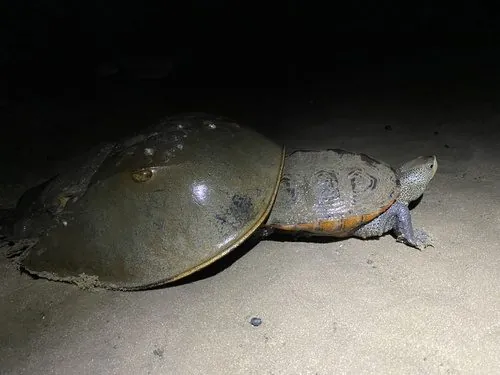

其他无脊椎动物 · 动物界
美洲鲎 Limulus polyphemus

体呈马蹄形、尾剑细长的古老海生节肢动物，栖于北美大西洋岸泥滩，其血提取物用于内毒素检测。
- 分类
- 门节肢动物门纲肢口纲目剑尾目科鲎科属鲎属
- 栖息环境
- 浅海沙泥底质、河口与繁殖期的高潮带沙滩
- 地理分布
- 北美大西洋沿岸，自缅因州至墨西哥尤卡坦半岛
- 保护级别
- 种群受采血与栖息地丧失压力，多国加强采血放归管理
物种志
美洲鲎的体长约四十至六十厘米，头胸甲宽阔呈马蹄形，腹甲呈六边形，尾剑细长如针。体表深褐至灰绿色，背面光滑，腹面有五对步足，最后一对为推泥的铲状足。它属于剑尾目，是四亿多年前就存在的古老类群，形态变化极小，被称为活化石，与三叶虫有较近的亲缘关系。
它分布于北美大西洋沿岸，从缅因州至墨西哥尤卡坦半岛，栖息在浅海沙泥底质和河口，繁殖期爬上沙滩产卵，幼体在潮间带泥滩成长。它以蠕虫、贝类为食，夜间活动。它的血液含铜离子呈蓝色，其中的变形细胞遇内毒素会凝固，据此开发的鲎试剂广泛用于药品和医疗器械的细菌检测。采血后放归的做法已推广，但采血和栖息地丧失仍对种群造成压力。
形态与习性
- 体长约四十至六十厘米，含尾剑
- 形态头胸甲马蹄形，腹甲六边形
- 血液含铜离子呈蓝色，变形细胞遇内毒素凝固
- 繁殖春季爬上沙滩产卵，幼体在泥滩成长
- 食性蠕虫、贝类，夜间活动
- 利用鲎试剂用于药品内毒素检测
趣味知识
- 它的血是蓝色的，因为运输氧气靠的是含铜的血蓝蛋白。
- 它的血一碰到细菌内毒素就会凝固，药品检测靠的就是这个反应。
- 它比恐龙还早出现，四亿多年来外形几乎没变。